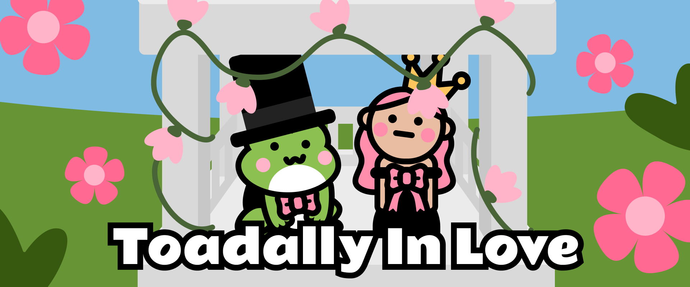
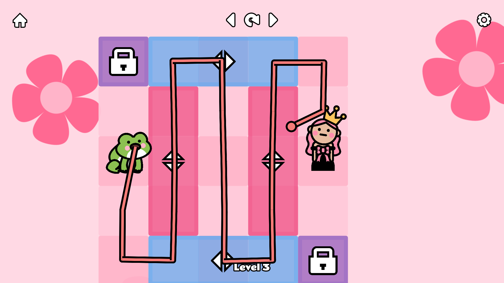
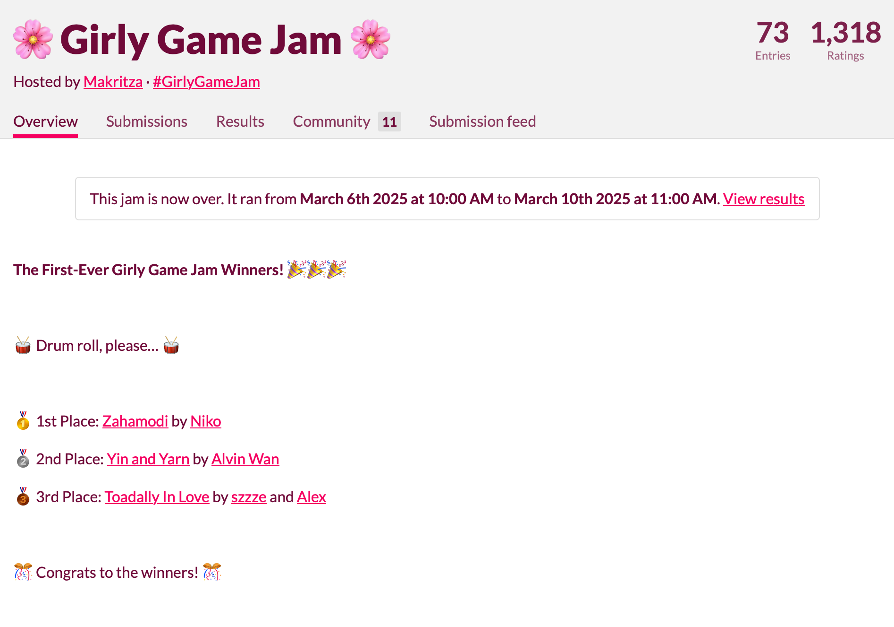
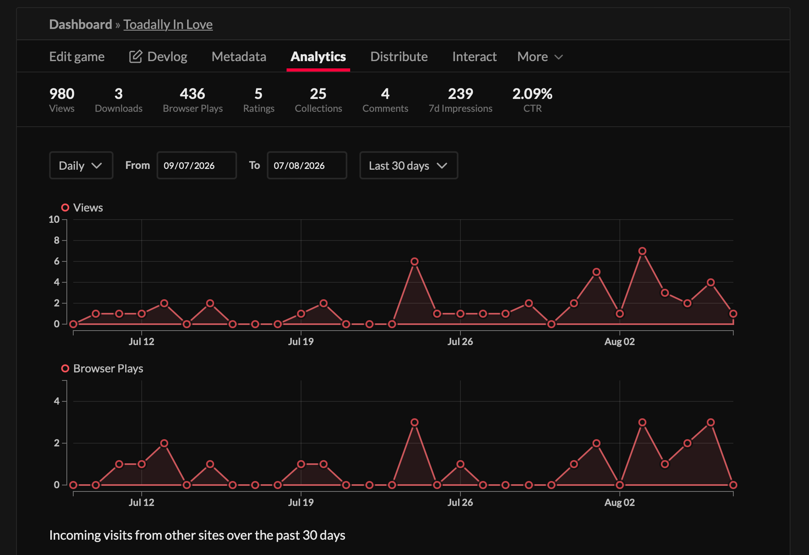
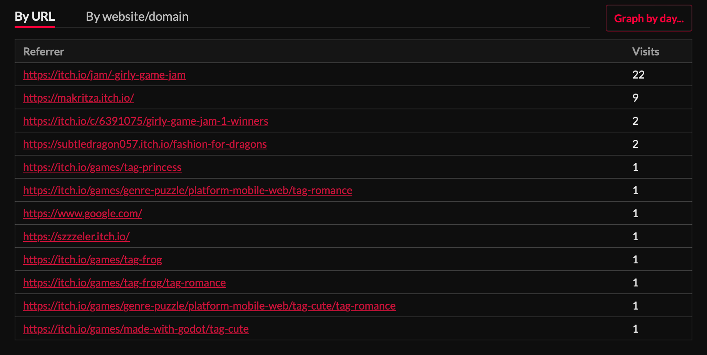

Make the grid readable
Used color, tile states, and simple character silhouettes to help players understand where they could move and what might block a path.
A playful puzzle game about clearing a path, pulling objects, and bringing two unlikely characters together.
I led art direction and UX for Toadally In Love, a grid-based puzzle game built with a programmer during the Girly Game Jam.

Players click or drag across a grid to extend the toad’s tongue, clear a route, and pull objects toward the goal. I shaped the visual direction, information hierarchy, interaction cues, and game feel around that core mechanic.
Used color, tile states, and simple character silhouettes to help players understand where they could move and what might block a path.
Designed the tongue path as direct visual feedback, connecting the player’s drag gesture to the puzzle outcome.
Built a distinct floral visual world that supports the romantic, humorous premise without getting in the way of the puzzle.
The interface uses simple tiles, character placement, and the tongue path to make each move understandable. The remaining gameplay screens show how those interaction cues stay clear as the puzzle changes.


Toadally In Love ranked third overall among 73 game-jam entries, including second place for gameplay and audio. Its itch.io analytics later recorded 980 views, 436 browser plays, 25 collections, five ratings, and four comments.




A complete, public HTML5 puzzle game that combined clear interaction design with a memorable visual world under a four-day deadline.